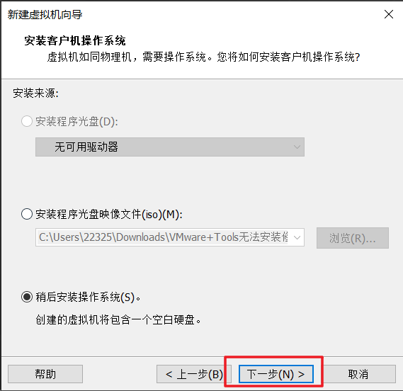
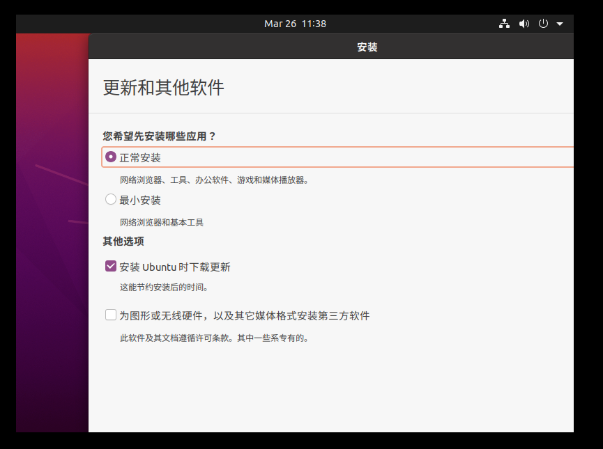

ubuntu20.04安装
ubuntu20.04安装
参考教程：https://blog.csdn.net/Thanlon/article/details/100072462
下载链接（也可以去官网找）：Index of /ubuntu-releases/20.04/ | 清华大学开源软件镜像站 | Tsinghua Open Source Mirror
1、我们选择 ubuntu-20.04.4-desktop-amd64.iso 镜像文件进行下载
2、打开VMware，新建虚拟机

3、自定义安装，单击下一步
4、默认，单击下一步
5、稍后安装操作系统，单击下一步

6、选择Ubuntu64位，单击下一步
7、虚拟机名称可选默认，但我个人推荐写成操作系统+版本号；安装位置可以选默认，但我个人有存储虚拟机操作系统的文件夹，所以进行了修改；单击下一步

8、网上找了一些有关Ubuntu虚拟机处理器配置的文章，不是很明白，先默认吧，反正之后应该能改，就算改不了大不了重新装一遍，默认，单击下一步
9、内存推荐4GB，单击下一步
10、网络地址转换，单击下一步
11、默认，单击下一步
12、默认，单击下一步
13、创建新虚拟磁盘，单击下一步
14、分配的大小根据个人情况来，常用且磁盘/硬盘容量足够，可以适当多分配一点；存储为单个文件；单击下一步
15、默认，单击下一步
16、默认，单击完成
17、编辑虚拟机设置->CD/DVD(SATA)->使用ISO映像文件->装载第一步下载的 .iso 文件，单击确定（在下方，下图中没截出来）
18、开启此虚拟机
19、等待
20、选择语言（中文简体），单击安装Ubuntu
21、好家伙，看不到下面的继续按钮
21-1：尝试挪动，无果，单击输入框
21-2：查看别人的教程，得知继续按钮的位置
21-3：返回21-1中键盘按下 ↓ ↓ → → ，不放心的话可以多按几个 ↓ →，然后回车，成了，但下一个界面又看不到下面的继续按钮，之后我直接贴别人的图了，方便看，我这我就自己用键盘解决（注：若勾选下图中安装Ubuntu时下载更新，安装过程会特别慢，对了，这里的更新只是更新一些程序，不会使Ubuntu的版本发生改变，觉得慢的话可以点skip跳过）

22、默认，单击继续
23、不知道为什么，我这突然又好了，这里清除的是你分配的磁盘空间，不是将你的磁盘清空，默认，单击现在安装
24、单击继续
25、选至中国，单击继续
26、密码设简单一点吧，方便以后操作，姓名显示如步骤30（目前步骤26，下图中的姓名我在点继续之前改成了xy6666，以便观察）,用户名显示如图26-1，单击继续
26-1：
27、等待，有点难等 U•ェ•*U
28、单击现在重启
29、单击回车，图没截到 QAQ
30、点击xy6666
31、菜单栏找到终端右键添加至收藏夹，双击打开一个终端，ok了
修改root密码
参考链接：Ubuntu设置修改root密码（初始密码）_k3rw1n的博客-CSDN博客_ubuntu设置root密码
在终端输入命令：
1 | sudo passwd root |
会显示以下内容，根据内容输入
1 | [sudo] password for kerwin: #输入当前用户密码 |
终端颜色风格设置
1、打开终端，感觉这暗绿色的前缀不太好看（个人对老版本的亮绿色前缀看习惯了），所以决定修改一下
2、点击终端右上角的菜单，打开配置文件首选项
3、点击配置文件后面的+号，新建一个配置文件（别直接在默认上的改，若新建的改崩了，还可以调回默认的配置文件），将新建的配置文件设为默认。
4、光标形状默认是方块，我修改成了下划线，个人感觉方便观看一些

5、ok，终端风格自己看着配吧
6、新旧终端对比图
切换apt源
参考链接：Ubuntu20.04软件源更换 - 知乎 (zhihu.com)
链接：ubuntu | 镜像站使用帮助 | 清华大学开源软件镜像站 | Tsinghua Open Source Mirror
1、Ubuntu安装完毕，现在准备为我的Ubuntu搭建一个pwn学习环境，但发现连个git都安装不了
2、原因呢，可能是因为墙的原因（也有可能是因为我目前虚拟机的网络配置有问题），所以下不了国外网站的东西，先不管了，切换个apt源再说
3、大致分三个步骤：
1）：备份文件（/etc/apt/sources.list）
2）：打开文件（/etc/apt/sources.list）并删除文件中的所有内容（/etc/apt/sources.list）
3）：粘贴相应字段至文件（/etc/apt/sources.list）即可
4、下面我们来操作，1）：
1 | 输入指令：sudo cp /etc/apt/sources.list /etc/apt/sources.list.bak |
可以看到，已经生成了备份的.bak文件
5、现在执行2）：因为之前用的都是vim，但现在没翻墙vim下不了，vi捣鼓了半天不太会用，这里我选择直接 #rm sources.list ，然后再 vi 新建一个同名文件
1 | 上图末尾处输入： |
5-1：进入vi编辑器后，先按两下i，有如下显示后按DELETE键删除掉这个i（平时用来删除文字的BACKSPACE反正我用不了）
6、现在来操作3）：，确保i删除文本中没有任何内容后，复制以下文字到文本中（注：Ubuntu中的复制粘贴是 ctrl+shift+c/v）
1 | # 默认注释了源码镜像以提高 apt update 速度，如有需要可自行取消注释 |
6-1：按下冒号键（shift+：），输入wq，回车
6-2：# cat sources.list 查看内容是否修改成功，显示如下则表示修改成功
注：ok，换源操作到此为止，下面是我换源后遇到的一些问题，记录一下
（括号内这段是我后来加的：这些问题在我重启了虚拟机后得到了解决）
7、不知道什么情况，准备打exit退出root模式的，结果弹出这些东西，记录一下：（可能是我在root模式时使用了apt install vim导致的）（输入：ctrl+D）
8、既然它提示了个 vim:finished 下好了那我们试试，行吧，我想多了
9、输入指令 $ sudo apt install vim ， emm……什么鬼
10、更新一下 apt-get ，.。。。。。。
11、ping 一下本地，能通
12、ping下百度
12-1：Windows cmd中 ping 下百度，记录ip
12-2：ping不通，看来我这还得调下网络配置
12-3：查找解决方案
参考链接： Linux解决ip ping不通百度的问题_aaaaajiboke的博客-CSDN博客_linux ping不通
13、。。。。。。还要改配置文件，我先试试重启虚拟机吧。。。。。。重启过后，先来ping下百度，⊙∀⊙！，通了，那上面的解决方案目前就用不到了，行吧，这就这么过了，以后遇到网络问题就重启试试。
13-1：vim装不了，试试先更新下apt
13-2：再试试安装vim，成了
13-3：输入不了中文，进入火狐浏览器–>地址栏输入www.baidu.com-->搜索搜狗输入法
13-4：点击输入法linux版，下载x86的就行，下载后有个教程，跟着做就行，注销计算机就是重启
Pwntools安装
参考链接：ctf堆入门 - paper | Clang鱼塘 (blingblingxuanxuan.github.io)
1 | #安装Pwntools |
测试：能导入pwn模块并使用cylic表示pwntools安装成功（注：上面的警报不用管）
Pwngdb + Pwndbg 的联合使用
参考链接：Pwngdb + Pwndbg 的联合使用 | Lantern’s 小站
1 | #pwndbg源码下载 |
1 | #pwndbg文件下载好后，终端执行以下两条指令进行安装 |
1 | #Pwngdb源码下载 |
1 | #将.gdbinit复制到~目录下 |
1 | #最后，修改.gdbinit文件为如下即可 |
ok，可以开始使用pwndbg了
注：中间要是遇到了各种网络问题导致的文件下载失败，有以下几个解决方案
1、主机换网络（wifi、手机热点、校园网等进行切换）
2、重启虚拟机
3、主机断网一小会儿再换网络
4、重启主机 or 百度找解决方案 or 找大佬帮忙
ROPGadget & one_gadget
参考链接：ctf堆入门 - paper | Clang鱼塘 (blingblingxuanxuan.github.io)
1 | #ROPGadget |
1 | #one_gadget |
出现的问题的解决方案
解决ROPGadget无法使用：
参考链接：ROPgadget 安装 错误处理 与使用_yongbaoii的博客-CSDN博客_ropgadget
1 | #解决方案: |
报错提示的路径：
修复过程：
解决exp无法执行：

1 | #解决方案 |
图1：

图2：这里最后少了一个a.sendline(‘/bin/sh\x00’)，对照图3看
图3：
图4：
32位lib库
参考链接：ctf堆入门 - paper | Clang鱼塘 (blingblingxuanxuan.github.io)
1 | # 第一步，确认系统的架构 |
ok，先配到这吧，之后缺啥再安装，整整捣鼓了一个周末。。。。。。感觉图片插的有点多